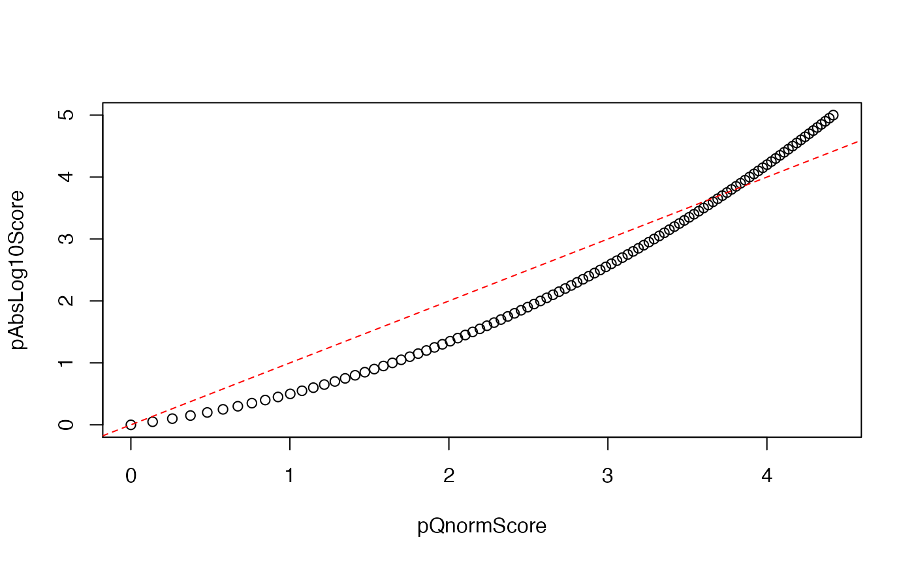

The function wraps other functions to map p values ranging on \((0,1]\) to continuous scores ranging on \(R\) in a number of ways.
pScore(p, sign = 1, method = c("qnorm", "absLog10"))
| p | p-value between (0,1] |
|---|---|
| sign | Sign of the score, either positive (in case of positive
numbers), negative (in case of negative numbers), or zero. In case a
logical vector, |
| method | Currently available methods include |
#> [1] 3.00000 2.00000 1.30103 1.00000 0.30103 0.00000pScore(testPvals, method="qnorm")#> [1] 3.2905267 2.5758293 1.9599640 1.6448536 0.6744898 0.0000000#> [1] -3.00000 2.00000 -1.30103 1.00000 -0.30103 0.00000pScore(testPvals, sign=testPvalSign, method="qnorm")#> [1] -3.2905267 2.5758293 -1.9599640 1.6448536 -0.6744898 0.0000000#> [1] 3.00000 -2.00000 1.30103 -1.00000 0.30103 0.00000pScore(testPvals, testLog, method="qnorm")#> [1] 3.2905267 -2.5758293 1.9599640 -1.6448536 0.6744898 0.0000000testPvals <- 10^seq(-5, 0, 0.05) plot(pScore(testPvals, method="qnorm"), pScore(testPvals, method="absLog10"), xlab="pQnormScore", ylab="pAbsLog10Score"); abline(0,1, col="red", lty=2)